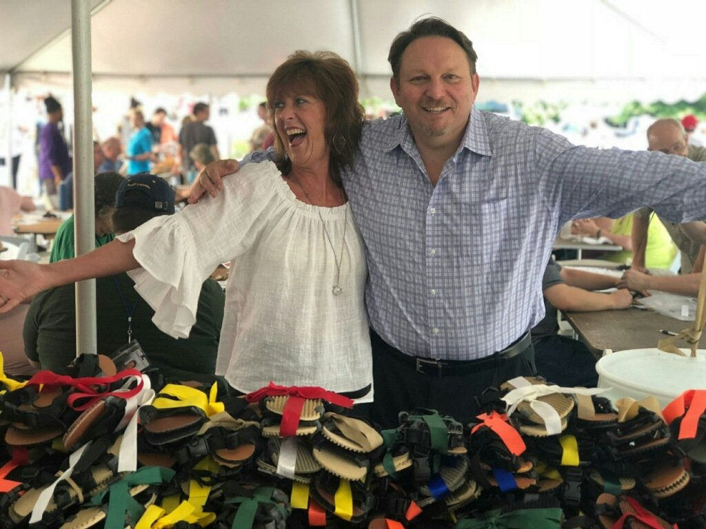
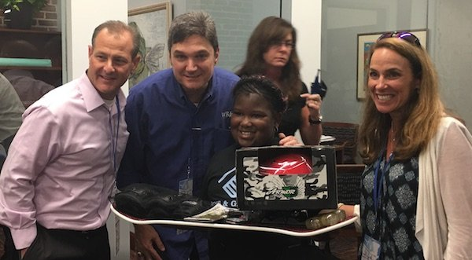

★★★★★
As a participant, you walk away feeling inspired to grow yourself, help others, and — as James would say — ‘Be Legendary’.
Mark Williams
Coakley & Williams Hotel Management
The hardest team to align is the one at the top. We design leadership retreats that build the trust and candor your executive team needs — then put it to work on something that matters.

Titles get in the way of honesty. We create the conditions for your team to drop the armor and actually align.
The kind that survives hard decisions, not the kind that fades after the offsite.
A space where the unspoken finally gets said — and the team is stronger for it.
Competing agendas resolved into a shared set of commitments leaders own together.
Light monthly touch points turn retreat breakthroughs into lasting behavior.

Collaboration, trust, team-versus-individual ego and the integration of divisions are just the starting points for building your legendary executive team. We facilitate the hard conversation, then anchor it in a shared act of building.
Every format blends facilitated leadership work with a shared, hands-on experience — tailored to your goals.
An adventurous offsite that pulls leaders out of their comfort zone and into honest territory.
An intimate cabin setting for deep, uninterrupted alignment away from the noise.
Multi-day retreats in a destination setting that blend strategy, candor and connection.
Built around your team’s specific friction points, headcount and timeline.
For immersive, multi-day executive retreats in destination settings — purpose-built for leadership teams that want to go deeper. Explore the dedicated experience.
Visit Legendary Retreats →Pairing the hard conversation with a shared act of giving is what makes the breakthrough real — and what your executives carry back into the business. We’ve done it with leadership teams since 2003.

As a participant, you walk away feeling inspired to grow yourself, help others, and — as James would say — ‘Be Legendary’.
The tools, facilitator guide and support materials are fantastic — self-explanatory and easy to follow. The activities facilitated the group’s discussion without prompts.
The best connection I’ve had with our staff for any training at our company. Thanks to your ideas!
Facilitated work that strengthens trust, candor and alignment among senior leaders. Unlike general team building, it confronts the real dynamics at the top — ego, competing priorities and unspoken tension — in a setting designed for honest conversation.
Most run one to three days and blend facilitated sessions with a shared hands-on experience. Formats range from immersive off-road retreats to private cabin and cruise settings, all tailored to your team’s goals.
We work with leadership teams as small as five. Executive engagements are intentionally intimate so every voice is in the room.
Yes. We provide light monthly touch points and data-backed follow-up so retreat breakthroughs turn into lasting behavioral change.
Tell us about your leadership team and what’s getting in the way. We’ll design a retreat that gets it on the table. See how we’ve done it in our executive success stories.